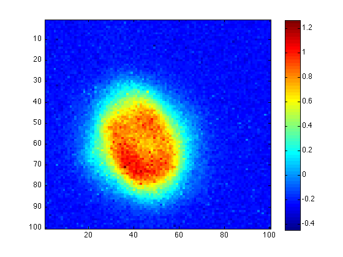
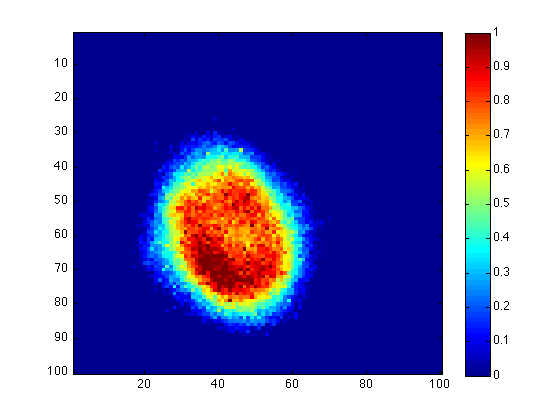

function imr=imscale(im,maxv,minv)
The function imscale(im,maxv,minv) linearly rescales an image im between 1 and 0 so that maxv corresponds to a 1 and minv corresponds to a 0
In this example we have an original image im, with the main structure has minv = 150 and maxv = 350. Note that we didn't choose the maximum value in the colorbar (i.e. 400) as maxv. Since there are only a few points with that high values, these pixels may be affected by instrumental error.
imagesc(im) colorbar
The first step of normalization is to subtract im by minv, so the minimum value of the interesting structure is 0. The second step is to divide the subtracted image by the normalizing factor maxv-minv, so that the maximum value of the structure is 1. Combine these two steps, we have
imr=(im-minv)./(maxv-minv); imagesc(imr) colorbar
Now the whole image is rescaled to values near the range (0,1), but there still are some pixels with negative values, or have values larger than 1. Therefore the last part of rescaling is to smooth the remaining pixels with either 0 or 1:
imr(imr<0)=0; imr(imr>1)=1;
Then we have the neat rescaled image, with the main structure emphasized:
imagesc(imr) colorbar